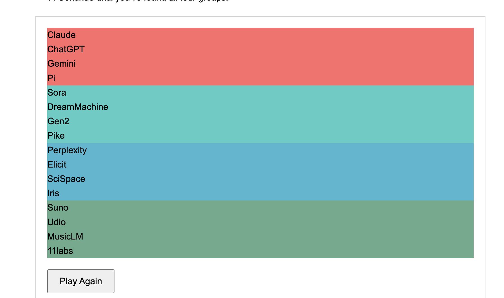

Welcome to the Connections Game! This game challenges you to find groups of related words.
me: are you familliar with the NYTimes connections game?
Claude: Yes, I'm familiar with the New York Times Connections game. It's a popular word puzzle game that was introduced by the New York Times in 2023 as part of their Games section. In Connections, players are presented with a grid of 16 words or phrases. The goal is to organize these words into four groups of four, where each group shares a common theme or connection. These connections can be based on various factors such as synonyms, categories, idioms, or other relationships. The game is known for its increasing difficulty as you progress, with some connections being obvious and others requiring more lateral thinking. Players have a limited number of attempts to guess the correct groupings. Would you like to know more about the game, or perhaps discuss strategies for playing it?
me: create an html5 version of the game
Claude: I've created a simple HTML5 version of the Connections game. Here's a breakdown of its features: ....
me: great. now break this into three files:
- and html file which explains the game and has the canvas embedded.
- a js file with the codes for the game (the html will call it)
- a resource file where I can edit the catagories
me:great. Let's take it a step further. in the json file, I want to have an arbitrary number of sets of words & groups. the script will select one of them randomly
Claude: Excellent idea! This will add more variety to the game and make it more replayable. Let's modify our approach to accommodate this change.
me: why do you have both "words" and "groups" for each set? the words in the groups are the words, so this is redundant.
Claude: ou're absolutely right, and I appreciate you pointing that out. This redundancy is unnecessary and could potentially lead to inconsistencies. Let's optimize the JSON structure to remove this redundancy. We'll modify the JSON to only include the groups, and we'll derive the words from these groups in our JavaScript.
me: I think it's broken, I don't see the grid
Claude: I apologize for the oversight. You're right, and I appreciate you pointing that out. The issue is likely due to the way we're handling the remaining words in the grid. Let's fix this by ensuring the grid is always visible and populated correctly. We'll modify the JavaScript to address this issue.
me: ok it works, but the solved groups appear as a vertical list of words, rather than as a horizontal list of boxes (like in the grid)
Claude: I understand the issue now. You're right, the solved groups should appear as horizontal lists of boxes, similar to how they appear in the grid. Let's modify the CSS and JavaScript to achieve this layout. We'll adjust the styling for the solved groups and update how we create them in the JavaScript.
me: let's extract the css to a separate file
Claude: Certainly! Extracting the CSS to a separate file is a good practice for better organization and maintainability. Let's create a new CSS file and update our HTML to reference it.
This separation of concerns (HTML for structure, CSS for styling, and JS for behavior) is a best practice in web development. It makes your code more organized, easier to maintain, and allows for better caching by browsers.
me: I added a set to the json, but when I click play again the script shows the second set over and over
Claude: I see. This issue occurs because the script is not properly randomizing the set selection when you restart the game. Let's modify the JavaScript to ensure it selects a random set each time you play again.